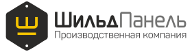

Три варианта на текущей структуре сайта: все блоки и тексты сохранены, меняется подача. Функции личного кабинета (ИИ-конструктор шильда, калькулятор, отправка в производство) – следующий этап, в третьем варианте показан их прообраз.
Светлый, фирменный жёлтый и графит. Первый экран – металлическая пластина с фото продукции, которая наклоняется за курсором и ловит блик.
Инженерный лист: сетка, штамп, размерные линии. Шильд прорисовывается как чертёж и «заполняется» фото изделия. Подчёркивает собственное конструкторское бюро.
Тёмный цех. Посетитель вписывает свой текст и выбирает металл – лазер гравирует шильд прямо на экране, с искрами. Макет уходит в заявку.